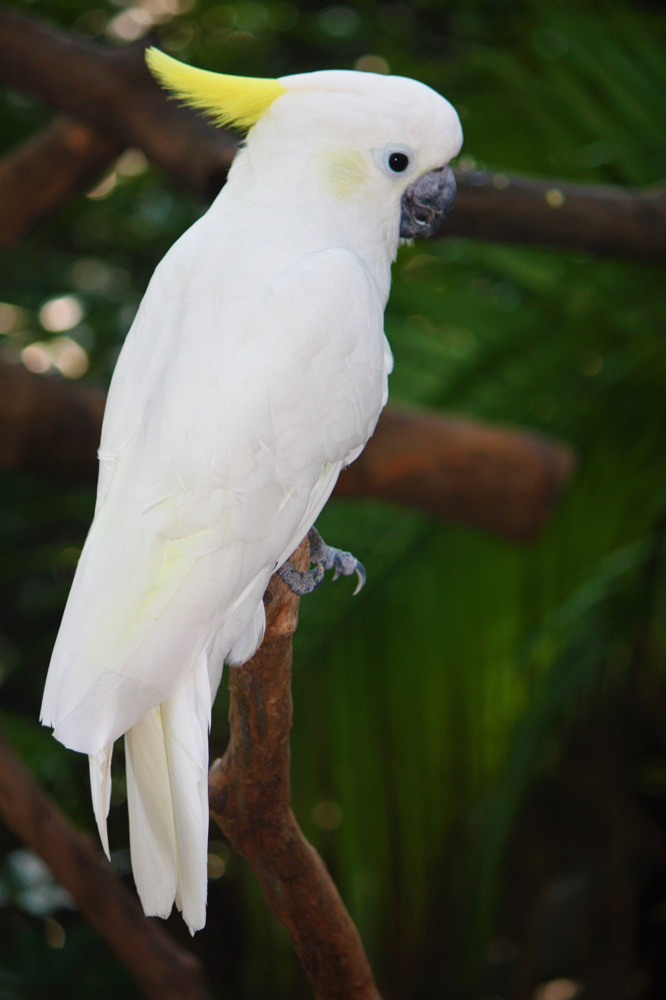

Magamról
Molnár Szabrina vagyok és jelenleg a SZÁMALK-Szalézi Technikum és Szakgimnázium első éves hallgatójaként tanulok szoftverfejlesztést. 2000.02.18-án születtem Budapesten és jelenleg itt is élek. Testvéreim közül mindig is engem vonzott a legjobban a technika világa. Korábban a turizmus és a vendéglátás felé terelődtem, de most olyat tanulok, amit élvezek is. Első sorban a mobiltelefonok érdekeltek, de az iskolában sok újdonságot tanulok, amik egyre jobban kiszélesítik az érdeklődési körömet.
Szabadidős tevékenység
 Középiskolában és egyetemen is tanultam japán nyelvet. Érdeklődöm a kultúra iránt és első számú vágyam elutazni Japánba. 2020-ban lehetőségem volt egy saját szócikket létrehozni a Wikipédián
az első kínai zen buddhista szerzetesről, Bódhidharmáról. (A képre kattintva elolvashatod)
Középiskolában és egyetemen is tanultam japán nyelvet. Érdeklődöm a kultúra iránt és első számú vágyam elutazni Japánba. 2020-ban lehetőségem volt egy saját szócikket létrehozni a Wikipédián
az első kínai zen buddhista szerzetesről, Bódhidharmáról. (A képre kattintva elolvashatod)
Szeretem hasznosan eltölteni az időmet, ezért általában dolgozom valamit. Sokféle tapasztalatot szereztem az évek során, amiknek nagy hasznát veszem a mindennapokban.
Nem áll tőlem távol, hogy emberekkel foglalkozzak, mégis emiatt izgalmas nekem az iskola projektjein dolgozni, ahol mélyebben is tudok azzal foglalkozni, ami engem igazán érdekel.
Ha teljes nyugalomra vágyom, akkor kikapcsolódásképpen sétálok egy kicsit. Ismerem a belvárost és szabad perceimben szívesen teszek egy nagyobb kört a szabad levegőn.
Van egy Zsuzska nevű kutyám. Beagle keverék és 2010-ben születhetett. Rendkívül barátságos és társaságkedvelő. Megtanítottam neki, hogy hogyan adjon pacsit és a bang trükköt is végre tudja hajtani.
Különösebben a papagájokért rajongok igazán. Kedvenc papagájom a sárgabóbitás kakadu. A kakaduk rendkívül intelligens és szórakoztató madarak.
A sárgabóbitás kakadu
Nagy sárgabóbitás kakadu
 A sárgabóbitás kakadu vagy nagy sárgabóbitás kakadu (Cacatua galerita) a madarak (Aves) osztályának papagájalakúak (Psittaciformes) rendjébe, ezen belül a kakadufélék (Cacatuidae) családjába tartozó faj.
Ausztrália északi, déli és délkeleti területein honos a York-félszigettől Tasmaniáig, valamint a partjaik előtti szigetek némelyikén. Előfordul Indonézia egyes szigetein és Pápua Új-Guineában is. Betelepítették Új-Zélandra is.
A sárgabóbitás kakadu vagy nagy sárgabóbitás kakadu (Cacatua galerita) a madarak (Aves) osztályának papagájalakúak (Psittaciformes) rendjébe, ezen belül a kakadufélék (Cacatuidae) családjába tartozó faj.
Ausztrália északi, déli és délkeleti területein honos a York-félszigettől Tasmaniáig, valamint a partjaik előtti szigetek némelyikén. Előfordul Indonézia egyes szigetein és Pápua Új-Guineában is. Betelepítették Új-Zélandra is.
Testhossza 45-51 centiméter, a hím tömege 820-920 gramm, a tojóé 840-970 gramm. Tollazata fehér, de — amint ezt neve is jelzi — hosszú, felálló, hátrafelé keskenyedő bóbitája (és fültájéka) kénsárga. Evezőtollai és kormánytollai
alsó felületén a belső zászló halványsárga. Csőre fekete, a lába sötétszürke. Természetes hangja éles, rikoltó. A hím írisze (szivárványhártya) fekete, a tojóé vörösesbarna. A szem körül csupasz, fehér gyűrű alakult ki. A valamivel
kisebb tojó csőre is kisebb, a csőr hegye rövidebb, tetőéle kerekebb. Emellett a tojó homloka szélesebb, a feje kerekebb, a szeme kevésbé előreugró.
A ligetes vidékeket kedveli, víz közelében. Nappal aktív; párban vagy kis csapatokban él. Olykor nagyobb, több száz egyedből álló csapatok is kialakulhatnak. Általában a nyílt, magas fákkal körülvett terepet részesíti előnyben,
de mindig vízközelben marad. Gyorsan, kis szárnycsapásokkal repül, időnként siklórepülésre vált. Hangja éles, rikácsoló. Tápláléka magokból, gyökerekből, gumókból, mogyoróból, különböző rovarokból, valamint ezek lárváiból tevődik össze.
Ezeket többnyire a földön legelészve csipegeti fel. Eközben a csapat egyik tagja egy magas fán őrködik, és szükség esetén rikoltva figyelmezteti társait. Jelentős mezőgazdasági kártevőként csapatosan megszállja a gabona- és kukoricatáblákat is.
Kis sárgabóbitás kakadu

Az aranyosarcú kakadu vagy kis sárgabóbitás kakadu (Cacatua sulphurea) a madarak osztályának a papagájalakúak (Psittaciformes) rendjéhez és a kakadufélék (Cacatuidae) családjához tartozó faj.
Indonézia szigetein honos: a Kis-Szunda-szigeteken (Balitól keletre Timor szigetéig (itt a sziget keleti politikailag önálló felén, Kelet-Timoron is él), Celebeszen és a szomszédos szigeteken, valamint a Jávai-tengeren található Masalembu-szigeteken.
Mára több helyen nagyon megritkult, egyes helyekről ki is halt.
Jelenleg a Szumba szigetén élő narancsbóbitás alfajból él a legtöbb egyed; nagyjából 3200 madár. Ez a populáció sem egységes, hanem több mint 30 kisebb erdőfoltra tagolt. Az alapfaj legnagyobb populációja Komodo szigetén van, ahol nagyjából 500 egyed
élhet. Itt elsősorban a híres komodói varánusz túlélése céljából létrehozott nemzeti parkban jutnak részleges védelemhez, mivel ott tilos a favágás és a sok turista miatt a park védelmét fokozták, az illegális befogást sokkal inkább visszaszorították, mint Indonézia más részein.
Kisebb populációi élnek még jelenleg is Celebesz, Buton, Moyo és Timor szigetén is. A kisebb szigeteken élő madarak sorsa sok esetben teljesen bizonytalan, a Cacatua sulphurea abbotti alfajból Masakambing szigetén 2008-ban már csak 10 egyedet találtak.
Nagyon valószínű, hogy ez az alfaj a 21. században ki fog halni. Ázsia délkeleti részén többfelé nagy tenyésztelepeken szaporítják; ezekről sok madár szökik el. Szingapúrban az elvadult populáció szerencsésen egyre nő, bár ezen madarak nem alfajtiszták.
Néhány száz egyedből álló félvad populációja van Hongkongban is.
A törzsváltozat testhossza 33-34 centiméter, testtömege 308-380 g. Alapszíne fehér, fültájékán élénksárga folttal. Bóbitája élénk citromsárga. Nyakán kétoldalt és a hasán a tollak töve sárgás, miként evező- és farktollainak alsó felületén a belső zászlók többsége is.
Szemgyűrűje krémfehér, a hím írisze fekete. Lába és csőre is fekete. A tojó valamivel kisebb, mint a hím. A csőre rövidebb, írisze vörösesbarna, bóbitája rövidebb (Romhányi).
Trópusi esőerdőkben él párban vagy kisebb csoportban. Ahol több az ennivaló, nagyobb csapat is összeverődhet. Félénk természetű. Táplálékért olykor a falvak kertjeibe is bemerészkedhet, de ilyenkor is nagyon óvatos. 3–4 éves korára válik ivaréretté.
Kakaduk a vadonban
Vicces videók kakadukról
(A videókat a YouTube-bról töltöttem le)